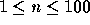
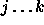
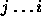
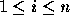

| Vertex |
Write a program that searches a directed graph for vertices which are inaccessible from a given starting vertex.
A directed graph is represented by n vertices where  ,
numbered consecutively  , and a
series of edges p -> q which connect the pair of nodes p and q in
one direction only.
, and a
series of edges p -> q which connect the pair of nodes p and q in
one direction only.
A vertex r is reachable from a vertex p if there is an edge p -> r, or if there exists some vertex q for which q is reachable from p and r is reachable from q.
A vertex r is inaccessible from a vertex p if r is not reachable from p.
The input data for this program consists of several directed graphs and starting nodes.
For each graph, there is first one line containing a single integer n. This is the number of vertices in the graph.
Following, there will be a group of lines, each containing a set of integers. The group is terminated by a line which contains only the integer 0. Each set represent a collection of edges. The first integer in the set, i, is the starting vertex, while the next group of integers,  , define the series of edges i ->  -> k, and the last integer on the line is always 0. Each possible start vertex i,  will appear once or not at all. Following each graph definition, there will be a one line containing list of integers. The first integer on the line will specify how many integers follow. Each of the following integers represents a start vertex to be investigated by your program. The next graph then follows. If there are no more graphs, the next line of the file will contain only the integer 0.
For each start vertex to be investigated, your program should identify all the vertices which are inaccessible from the given start vertex. Each list should appear on one line, beginning with the count of inaccessible vertices and followed by the inaccessible vertex numbers.
3 1 2 0 2 2 0 3 1 2 0 0 2 1 2 0
2 1 3 2 1 3